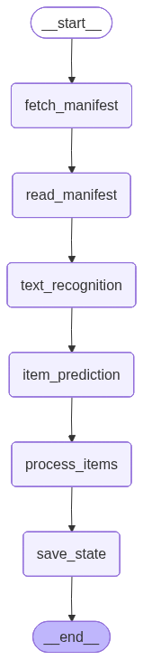

Processing Workflows#
While the descriptions from the first notebook are nice, they’re not research data or archival metadata.
This next section details a workflow that will process your materials into a structured format that can be used for research or library systems. This is an example that can be adapted to your specific needs.

Web Requests#
When using a web browser, we enter an address (URL) and the browser makes a request to the server hosting that resource. The server then responds with the requested resource, such as a web page, image, or document. The same process can be done programmatically using libraries like requests or httpx in Python. This allows us to automate the retrieval of resources from the web.
There are several types of HTTP requests, but the most common are:
GET: Retrieve data from a server (e.g., fetching a web page or image).
POST: Send data to a server (e.g., submitting a form or uploading a file).
When talking with our AI model, we are making a POST request. Our request includes:
The URL of the API endpoint we are sending the request to.
Headers that provide additional information about the request, such as authentication tokens and content type.
Message body that contains the data we want to send to the server in a format that the model can understand.
In the cell below, we create a function (a reusable block of code) to make a request to the model.
base_url = "https://api.parasail.io/v1"
api_key = "psk-..." # We will share this key with you during the workshop
model = "discircjipof-fantastic-futures" # Qwen3-VL-8B-Instruct
import json
import httpx
def call_model(
api_key: str, #your API key
base_url: str, #API base URL
img: str, #base64 encoded image or image URL
prompt: str, #text prompt
model: str = model #model name
) -> dict:
url = f"{base_url}/chat/completions"
headers = {"Authorization": f"Bearer {api_key}", "content-type": "application/json"}
data = {
"model": model,
"messages": [
{
"role": "user",
"content": [
{"type": "image_url", "image_url": {"url": img}},
{"type": "text", "text": prompt},
],
}
],
}
try:
response = httpx.post(url, headers=headers, json=data)
if response.status_code != 200:
print("Error:", response.status_code, response.text)
try:
response_data = response.json()
except json.JSONDecodeError:
print("Error decoding JSON response")
return {"error": "Failed to decode JSON response"}
if response_data.get("choices", None):
return response_data["choices"][0]["message"]["content"]
else:
print("Error: No choices in response")
return {"error": "No choices in response"}
except httpx.RequestError as e:
print("Request error:", str(e))
return {"error": str(e)}
import io
import base64
from PIL import Image
import requests
def load_image(image_url: str) -> str:
""""""
response = requests.get(image_url)
# print(f"Fetching image from {image_url}, status code: {response.status_code}")
if response.status_code == 200:
image_data = response.content
# Convert image data to PIL Image
pil_img = Image.open(io.BytesIO(image_data))
# Convert pil Image to base64 data URI
buf = io.BytesIO()
pil_img.save(buf, format="PNG")
encoded_string = base64.b64encode(buf.getvalue()).decode()
return f"data:image/png;base64,{encoded_string}"
else:
print("error", response.status_code)
return None
def resize_image(image_url, new_width=400, new_height=""):
# {scheme}://{server}{/prefix}/{identifier}/{region}/{size}/{rotation}/{quality}.{format}
# https://iiif.io/api/image/3.0/#21-image-request-uri-syntax
size = image_url.split("/")[-3]
region = image_url.split("/")[-4]
image_url = image_url.replace(
f"/{region}/{size}/", f"/{region}/{new_width},{new_height}/"
)
return image_url
img = load_image(
"https://images.eap.bl.uk/EAP699/EAP699_23_1/1.jp2/full/full/0/default.jpg"
)
response = call_model(
api_key=api_key,
base_url=base_url,
img=img,
prompt="Describe the image above in a single sentence.",
)
print(response)
Workflow Requirements#
Input is the URL for a box manifest in EAP (other other IIIF collection)
We need to predict individual items in the folder or box.
We need to recognize the relevant entites (people, places, organizations) in each item in the context of the larger collection. For a legal case, for example, we only need entitle in the case as well as their relationship to the case (e.g. plaintiff, judge, victim).
Strategy#
Extract the text of all individual images
Use text and descriptions to predict individual items (a two-page letter, a 50-page memo…)
Generate item-level research metadata
from IPython.display import Image as IPythonImage
display(IPythonImage(graph.get_graph().draw_mermaid_png()))

# https://langchain-ai.github.io/langgraph/tutorials/workflows/#prompt-chaining
from typing_extensions import TypedDict
class Box(TypedDict): # Level: File in EAP
box_manifest_uri: str
box_manifest_data: dict
box_metadata: dict
box_summary: str
image_urls: list[str]
image_height: int
image_width: int
images: list[dict]
item_grouping: list
items: dict
image_descriptions: bool
start_index: int # Start processing from this image index
end_index: int # End processing at this image index
import io
import base64
from PIL import Image
import json
import requests
from streamlit import image
from tqdm import tqdm
from rich import print
from langchain_openai import ChatOpenAI
from langchain_core.messages import HumanMessage
# https://docs.langchain.com/oss/python/langgraph/workflows-agents
# Nodes
def fetch_manifest(state: Box) -> Box:
header = {
"User-Agent": "Mozilla/5.0 (Windows NT 10.0; Win64; x64) AppleWebKit/537.36 (KHTML, like Gecko) Chrome/11"
}
manifest = requests.get(state["box_manifest_uri"], headers=header)
if manifest.status_code != 200:
raise Exception(f"Error downloading manifest: {manifest.status_code}")
manifest_id = manifest.json().get("label", "unknown")
print(f"[green]Successfully fetched manifest for {manifest_id}[/green]")
return {"box_manifest_data": manifest.json()}
def read_manifest(state: Box) -> Box:
images = []
for canvas in state["box_manifest_data"]["sequences"][0]["canvases"]:
for image in canvas["images"]:
image_uri = image.get("resource", None).get("@id", None)
if image_uri:
images.append(image_uri)
if state.get("start_index", None):
images = images[state["start_index"] :]
if state.get("end_index", None):
images = images[: state["end_index"]]
if state.get("start_index", None) and state.get("end_index", None):
images = images[state["start_index"] : state["end_index"]]
if state.get("image_height", None) and state.get("image_width", None):
images = [
resize_image(
image,
new_width=state["image_width"],
new_height=state["image_height"],
)
for image in images
]
elif state.get("image_height", None):
images = [
resize_image(image, new_height=state["image_height"]) for image in images
]
elif state.get("image_width", None):
images = [
resize_image(image, new_width=state["image_width"]) for image in images
]
metadata = {}
for item in state["box_manifest_data"]["metadata"]:
metadata[item["label"]] = item["value"]
print(f"Found {len(images)} images in manifest")
images = [{"image_url": url} for url in images]
return {
"box_manifest_uri": state["box_manifest_uri"],
"box_manifest_data": state["box_manifest_data"],
"images": images,
"box_metadata": metadata,
}
def text_recognition(state: Box) -> Box:
"""Extract text from images using OCR."""
images = state["images"]
from openai import OpenAI
for image in tqdm(images, desc="Extracting text from images"):
img = load_image(image["image_url"])
if img is None:
image["markdown_text"] = "Error loading image."
continue
response = call_model(
api_key=api_key,
base_url=base_url,
img=img,
prompt="Extract and return all the text from this image as markdown. Include all text elements and maintain the reading order.",
)
image["markdown_text"] = response
state["images"] = images
return state
def item_prediction(state: Box) -> Box:
llm = ChatOpenAI(model=model, base_url=base_url, api_key=api_key)
images = state["images"]
prompt = """Your are an archival processing assistant. You have descriptions and text from individual pages in a box. Each image is identified by an <image> tag. Group the images into groups that identify coherent items. For example, the images may be the front and back of the same page. Two pages may be the start and end of a letter. You may have images that start or end a folder. Return only a list of grouped images as JSON and your reaonsing. For example: {"items":[[1,2],[3],[4,5,6]], "reasoning:"..."}"""
prompt += "\nUse the following metadata for context, particularly look for types of documents and document groupings (i.e. letters, folders, photographs):\n"
for key, value in state["box_metadata"].items():
prompt += f"- {key}: {value}\n"
prompt += "\n\nHere are the image descriptions and text:\n\n"
for i, image in enumerate(images):
prompt += f"<image {i}>text {image['markdown_text']}</image {i}>"
print("Invoking LLM for item grouping...")
msg = HumanMessage(content=prompt)
result = llm.invoke([msg])
# convert result content to dict
if result:
import json
state["item_grouping"] = json.loads(result.content)
return state
def process_items(state: Box) -> Box:
llm = ChatOpenAI(model=model, base_url=base_url, api_key=api_key)
item_grouping = state.get("item_grouping", None).get("items", [])
images = state["images"]
items = []
for group in tqdm(item_grouping, desc="Processing items"):
# pool text from images in the item
item_texts = []
for index in group:
image = images[index]
item_texts.append(
f"<image {index}>text {image['markdown_text']}</image {index}>"
)
prompt = """Your are an archival processing assistant. You are given the text or description from one or more images in an item. Provide an item-level description. Be sure to record entities, such as people, places and organizations, with context as yaml frontmatter."""
prompt += "\n\nHere are the image descriptions and text:\n\n"
prompt += "\n".join(item_texts)
msg = HumanMessage(content=prompt)
result = llm.invoke([msg])
items.append(
{
"item_texts": item_texts,
"item_description": result.content,
"group": group,
"image_uris": [images[i]["image_url"] for i in group],
}
)
state["items"] = items
return state
def save_state(state: Box) -> Box:
box_id = (
state["box_metadata"]
.get("Identifier", "unknown_box")
.replace(" ", "_")
.replace("/", "_")
)
# if not output directory, create it
import os
os.makedirs("output", exist_ok=True)
with open(f"output/{box_id}.json", "w") as f:
json.dump(state, f, indent=4)
print(f"Saved processed state to output/{box_id}.json")
return state
from langgraph.graph import StateGraph, START, END
# Build workflow
builder = StateGraph(Box)
# Add nodes
builder.add_node("fetch_manifest", fetch_manifest)
builder.add_node("read_manifest", read_manifest)
builder.add_node("text_recognition", text_recognition)
builder.add_node("item_prediction", item_prediction)
builder.add_node("process_items", process_items)
builder.add_node("save_state", save_state)
# Add edges to connect nodes
builder.add_edge(START, "fetch_manifest")
builder.add_edge("fetch_manifest", "read_manifest")
builder.add_edge("read_manifest", "text_recognition")
builder.add_edge("text_recognition", "item_prediction")
builder.add_edge("item_prediction", "process_items")
builder.add_edge("process_items", "save_state")
builder.add_edge("save_state", END)
# Compile
graph = builder.compile()
# Invoke
output = graph.invoke(
{
"box_manifest_uri": "https://eap.bl.uk/archive-file/EAP699-23-1/manifest?manifest=https%3A//eap.bl.uk/archive-file/EAP699-23-1/manifest",
"end_index": 10, # process no more than 10 images
}
)
Successfully fetched manifest for Photographs
Found 4 images in manifest
Extracting text from images: 100%|██████████| 4/4 [00:10<00:00, 2.58s/it]
Invoking LLM for item grouping...
Processing items: 100%|██████████| 1/1 [00:03<00:00, 3.32s/it]
Saved processed state to output/EAP699_23_1.json
from rich import print
for item in output["items"]:
print(item["item_description"])
```yaml --- title: "Item with No Text Content" description: "This item consists of four images, none of which contain any textual content. The images appear to be blank or devoid of written information, potentially representing visual media such as photographs, diagrams, or scanned pages with no text." entities: - type: "unknown" name: "Image 0" context: "No text present" - type: "unknown" name: "Image 1" context: "No text present" - type: "unknown" name: "Image 2" context: "No text present" - type: "unknown" name: "Image 3" context: "No text present" --- ```
For evaluation section#
import srsly
evaluation_data = srsly.read_json("fmb_evaluation_data.json")
# Get manifest URIs from evaluation data
manifest_uris = [entry["manifest_uri"] for entry in evaluation_data.values()]
len(manifest_uris)
37
from pathlib import Path
for manifest in manifest_uris[2:]:
print(f"Processing manifest: {manifest}")
if Path("output/" + manifest.split("/")[-2].replace("-", "_") + ".json").exists():
print(f"Skipping {manifest}, already processed.")
continue
output = graph.invoke(
{
"box_manifest_uri": manifest,
"start_index": 0,
#end_index": 3,
"image_width": 400,
}
)
Processing manifest: https://eap.bl.uk/archive-file/EAP1477-1-1-3/manifest
Successfully fetched manifest for Caja 3
Found 1317 images in manifest
Extracting text from images: 0%| | 1/1317 [00:07<2:48:39, 7.69s/it]
---------------------------------------------------------------------------
BadRequestError Traceback (most recent call last)
Cell In[55], line 7
5 print(f"Skipping {manifest}, already processed.")
6 continue
----> 7 output = graph.invoke(
8 {
9 "box_manifest_uri": manifest,
10 "start_index": 0,
11 #end_index": 3,
12 "image_width": 400,
13 }
14 )
File ~/anaconda3/lib/python3.10/site-packages/langgraph/pregel/main.py:3094, in Pregel.invoke(self, input, config, context, stream_mode, print_mode, output_keys, interrupt_before, interrupt_after, durability, **kwargs)
3091 chunks: list[dict[str, Any] | Any] = []
3092 interrupts: list[Interrupt] = []
-> 3094 for chunk in self.stream(
3095 input,
3096 config,
3097 context=context,
3098 stream_mode=["updates", "values"]
3099 if stream_mode == "values"
3100 else stream_mode,
3101 print_mode=print_mode,
3102 output_keys=output_keys,
3103 interrupt_before=interrupt_before,
3104 interrupt_after=interrupt_after,
3105 durability=durability,
3106 **kwargs,
3107 ):
3108 if stream_mode == "values":
3109 if len(chunk) == 2:
File ~/anaconda3/lib/python3.10/site-packages/langgraph/pregel/main.py:2679, in Pregel.stream(self, input, config, context, stream_mode, print_mode, output_keys, interrupt_before, interrupt_after, durability, subgraphs, debug, **kwargs)
2677 for task in loop.match_cached_writes():
2678 loop.output_writes(task.id, task.writes, cached=True)
-> 2679 for _ in runner.tick(
2680 [t for t in loop.tasks.values() if not t.writes],
2681 timeout=self.step_timeout,
2682 get_waiter=get_waiter,
2683 schedule_task=loop.accept_push,
2684 ):
2685 # emit output
2686 yield from _output(
2687 stream_mode, print_mode, subgraphs, stream.get, queue.Empty
2688 )
2689 loop.after_tick()
File ~/anaconda3/lib/python3.10/site-packages/langgraph/pregel/_runner.py:167, in PregelRunner.tick(self, tasks, reraise, timeout, retry_policy, get_waiter, schedule_task)
165 t = tasks[0]
166 try:
--> 167 run_with_retry(
168 t,
169 retry_policy,
170 configurable={
171 CONFIG_KEY_CALL: partial(
172 _call,
173 weakref.ref(t),
174 retry_policy=retry_policy,
175 futures=weakref.ref(futures),
176 schedule_task=schedule_task,
177 submit=self.submit,
178 ),
179 },
180 )
181 self.commit(t, None)
182 except Exception as exc:
File ~/anaconda3/lib/python3.10/site-packages/langgraph/pregel/_retry.py:42, in run_with_retry(task, retry_policy, configurable)
40 task.writes.clear()
41 # run the task
---> 42 return task.proc.invoke(task.input, config)
43 except ParentCommand as exc:
44 ns: str = config[CONF][CONFIG_KEY_CHECKPOINT_NS]
File ~/anaconda3/lib/python3.10/site-packages/langgraph/_internal/_runnable.py:656, in RunnableSeq.invoke(self, input, config, **kwargs)
654 # run in context
655 with set_config_context(config, run) as context:
--> 656 input = context.run(step.invoke, input, config, **kwargs)
657 else:
658 input = step.invoke(input, config)
File ~/anaconda3/lib/python3.10/site-packages/langgraph/_internal/_runnable.py:400, in RunnableCallable.invoke(self, input, config, **kwargs)
398 run_manager.on_chain_end(ret)
399 else:
--> 400 ret = self.func(*args, **kwargs)
401 if self.recurse and isinstance(ret, Runnable):
402 return ret.invoke(input, config)
Cell In[51], line 84, in text_recognition(state)
77 client = OpenAI(
78 base_url = base_url,
79 api_key = api_key
80 )
81 for image in tqdm(images, desc="Extracting text from images"):
---> 84 chat_completion = client.chat.completions.create(
85 model = model,
86 messages = [
87 {
88 "role": "user",
89 "content": [
90 {
91 "type": "image_url",
92 "image_url": {
93 "url": image["image_url"]
94 }
95 },
96 {
97 "type": "text",
98 "text": "Extract text from the page. Preserve reading order. Retain formatting as markdown."
99 }
100 ]
101 }
102 ],
103 )
105 image["markdown_text"] = chat_completion.choices[0].message.content
106 # img_b64 = load_image(image["image_url"])
107 # if img_b64:
108 # print(f"Processing image: {image['image_url']}")
(...)
130 # result = llm.invoke([msg])
131 # image["markdown_text"] = result.content
File ~/anaconda3/lib/python3.10/site-packages/openai/_utils/_utils.py:286, in required_args.<locals>.inner.<locals>.wrapper(*args, **kwargs)
284 msg = f"Missing required argument: {quote(missing[0])}"
285 raise TypeError(msg)
--> 286 return func(*args, **kwargs)
File ~/anaconda3/lib/python3.10/site-packages/openai/resources/chat/completions/completions.py:1156, in Completions.create(self, messages, model, audio, frequency_penalty, function_call, functions, logit_bias, logprobs, max_completion_tokens, max_tokens, metadata, modalities, n, parallel_tool_calls, prediction, presence_penalty, prompt_cache_key, reasoning_effort, response_format, safety_identifier, seed, service_tier, stop, store, stream, stream_options, temperature, tool_choice, tools, top_logprobs, top_p, user, verbosity, web_search_options, extra_headers, extra_query, extra_body, timeout)
1110 @required_args(["messages", "model"], ["messages", "model", "stream"])
1111 def create(
1112 self,
(...)
1153 timeout: float | httpx.Timeout | None | NotGiven = not_given,
1154 ) -> ChatCompletion | Stream[ChatCompletionChunk]:
1155 validate_response_format(response_format)
-> 1156 return self._post(
1157 "/chat/completions",
1158 body=maybe_transform(
1159 {
1160 "messages": messages,
1161 "model": model,
1162 "audio": audio,
1163 "frequency_penalty": frequency_penalty,
1164 "function_call": function_call,
1165 "functions": functions,
1166 "logit_bias": logit_bias,
1167 "logprobs": logprobs,
1168 "max_completion_tokens": max_completion_tokens,
1169 "max_tokens": max_tokens,
1170 "metadata": metadata,
1171 "modalities": modalities,
1172 "n": n,
1173 "parallel_tool_calls": parallel_tool_calls,
1174 "prediction": prediction,
1175 "presence_penalty": presence_penalty,
1176 "prompt_cache_key": prompt_cache_key,
1177 "reasoning_effort": reasoning_effort,
1178 "response_format": response_format,
1179 "safety_identifier": safety_identifier,
1180 "seed": seed,
1181 "service_tier": service_tier,
1182 "stop": stop,
1183 "store": store,
1184 "stream": stream,
1185 "stream_options": stream_options,
1186 "temperature": temperature,
1187 "tool_choice": tool_choice,
1188 "tools": tools,
1189 "top_logprobs": top_logprobs,
1190 "top_p": top_p,
1191 "user": user,
1192 "verbosity": verbosity,
1193 "web_search_options": web_search_options,
1194 },
1195 completion_create_params.CompletionCreateParamsStreaming
1196 if stream
1197 else completion_create_params.CompletionCreateParamsNonStreaming,
1198 ),
1199 options=make_request_options(
1200 extra_headers=extra_headers, extra_query=extra_query, extra_body=extra_body, timeout=timeout
1201 ),
1202 cast_to=ChatCompletion,
1203 stream=stream or False,
1204 stream_cls=Stream[ChatCompletionChunk],
1205 )
File ~/anaconda3/lib/python3.10/site-packages/openai/_base_client.py:1259, in SyncAPIClient.post(self, path, cast_to, body, options, files, stream, stream_cls)
1245 def post(
1246 self,
1247 path: str,
(...)
1254 stream_cls: type[_StreamT] | None = None,
1255 ) -> ResponseT | _StreamT:
1256 opts = FinalRequestOptions.construct(
1257 method="post", url=path, json_data=body, files=to_httpx_files(files), **options
1258 )
-> 1259 return cast(ResponseT, self.request(cast_to, opts, stream=stream, stream_cls=stream_cls))
File ~/anaconda3/lib/python3.10/site-packages/openai/_base_client.py:1047, in SyncAPIClient.request(self, cast_to, options, stream, stream_cls)
1044 err.response.read()
1046 log.debug("Re-raising status error")
-> 1047 raise self._make_status_error_from_response(err.response) from None
1049 break
1051 assert response is not None, "could not resolve response (should never happen)"
BadRequestError: Error code: 400 - {'message': 'unknown error in the model inference server trace_id: 36368286256444696b67032ebeefd29c', 'type': 'api_error'}